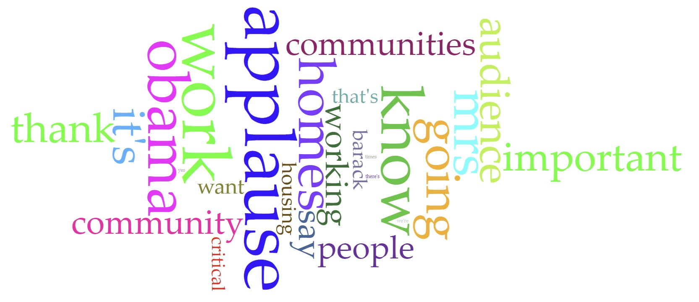

For my analysis I chose to use some of the first speeches Michelle Obama ever made as first lady. Her speeches along with many others made by first ladies are on this site.
The first speech is from February 2nd 2009 and was about the Department of Education. The speech had 1,065 words and 396 unique word forms. Words like "education", "kids", and "students" are used the most with education being used 8 times and the others 4 each.
The second speech is from February 4th 2009 and was about the Department of Education. The speech had 943 words with 332 unique word forms the smallest of all three. The words "home", "community", and "housing" top the list with 7, 5, and 4 uses respectively. 
The third speech was made on march 19th 2009 for Womens History Month. It clocks in at the longest with 1,183 words and 393 unique word forms. Its most used words are used much more than the others "women" was used 16 times and "first" 14.
Its pretty obvious I didn't bring up any N-grams and the reason for that is none of them were that useful. The only speech that has N-grams that are directly connected to what was being said was from the Womens History Month Speech; it has phrases like "the first" "that we" "and we" all of which connect to the topic of women and the things they've succeeded in shown here.